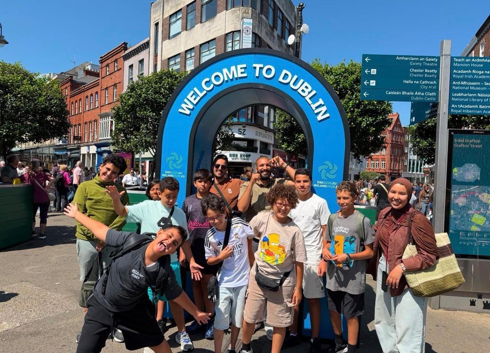
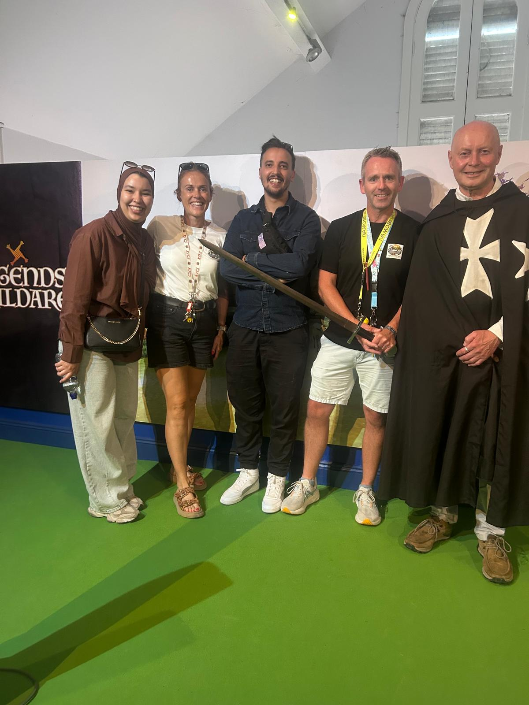

Connection
Bringing together students, teachers and organisations across cultures.

About Ireland 360°
Creating meaningful global connections through language, STEM, creativity and culture.
Our story
Ireland 360° Immersion Academy is based in the heart of Ireland’s countryside and creates immersive programmes across Ireland’s most iconic regions.
Its work connects Irish and international students, teachers and organisations through high-quality, people-first educational experiences.
Founded by experienced educators with more than 40 years of combined international expertise, Ireland 360° brings a global perspective and proven leadership to every programme. The team has led international mobility initiatives and cross-border partnerships worldwide.

More information
Explore the full summary of Ireland 360° Immersion Academy, including language learning, cultural activities, STEM learning and destinations across Ireland.
About John
John P. Hayes is currently a Principal of a large secondary school and a co-founder of Ireland 360° Immersion Academy.
A highly experienced educational leader, John has worked in senior leadership roles across Ireland and internationally, with a strong focus on innovation, global engagement and student-centred learning.
About Amanda
Amanda is a highly experienced educational leader and co-founder of Ireland 360° Immersion Academy, with over 20 years' experience in post-primary education in Ireland.
Currently serving as Deputy Principal in a large, vibrant co-educational secondary school, Amanda is passionate about creating inclusive, student-centred learning environments where every young person has the opportunity to succeed. She has a strong commitment to excellence in teaching and learning, innovation, creativity, and the development of programmes that inspire curiosity, confidence, and lifelong learning.
Amanda has extensive experience in curriculum development, STEM education, student wellbeing, and educational leadership. She is particularly passionate about building meaningful global partnerships and creating authentic cultural and language immersion experiences that broaden students' perspectives and prepare them to become confident, globally minded citizens. Through Ireland 360° Immersion Academy, she is dedicated to providing transformative educational experiences that combine academic learning with Irish culture, creativity, and innovation.
What guides us
Bringing together students, teachers and organisations across cultures.
Creating learning experiences that help students use language and ideas with purpose.
Opening space for cultural discovery, creativity and new ways of thinking.
Using Ireland’s regions, heritage and everyday experiences as part of the learning.
Get in touch
We welcome enquiries from international schools, agencies, Irish schools and parents.